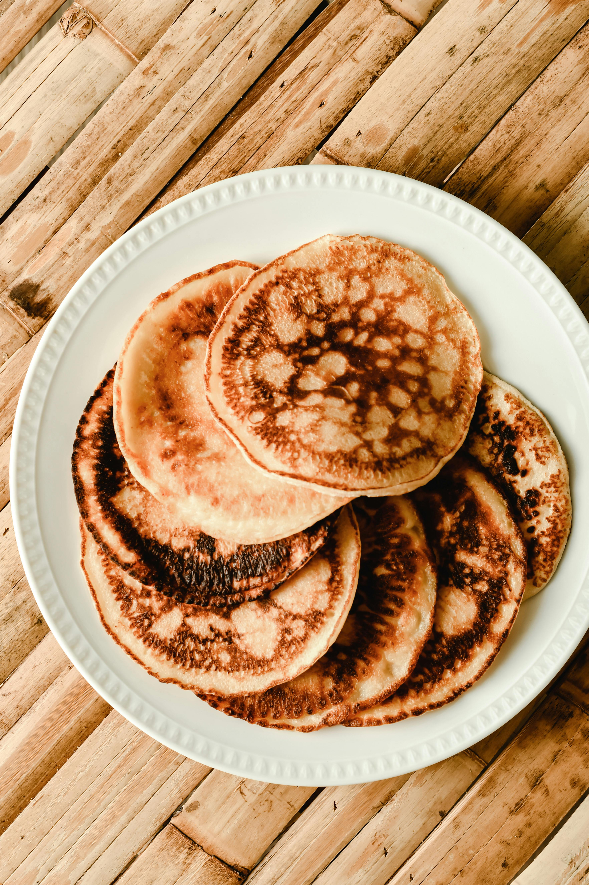

Home
Pancakes

Fluffy Stacks
These basic pancakes are light, fluffy, and perfect for breakfast. Made with simple ingredients, they cook quickly and pair well with syrup, fruit, or butter.
Ingredients
- 1 cup all-purpose flour
- 1 tablespoon sugar
- 1 teaspoon baking powder
- 1 cup milk
- 1 egg
- 1 tablespoon melted butter
- Pinch of salt
Steps
- In a bowl, mix flour, sugar, baking powder, and salt.
- In another bowl, whisk together milk, egg, and melted butter.
- Pour the wet ingredients into the dry ingredients and mix until smooth.
- Heat a lightly greased pan over medium heat.
- Pour about ¼ cup batter onto the pan.
- Cook until bubbles form on the surface.
- Flip and cook until golden brown, then serve.